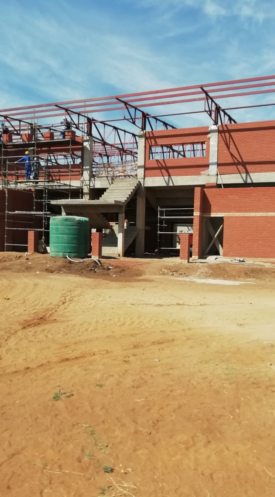
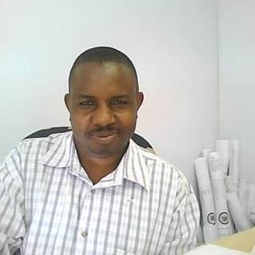

Professional Services
Architecture, quantity surveying, civil & structural engineering, project management and occupational health & safety, supported by construction supervision.
See more →• KALM-NTG ARCHITECTS
• KALM-NTG CONSTRUCTION

Every stage connects — from the first conversation and concept to design, project management, approvals, construction and professional oversight.
Discover KALM-NTG →Integrated services designed to make the building process clearer, better coordinated and easier for the client to navigate.
Architecture, quantity surveying, civil & structural engineering, project management and occupational health & safety, supported by construction supervision.
See more →General building, roofing, finishes, plumbing, electrical and construction coordination delivered with a focus on quality and practical execution.
See more →Structured project and programme management covering risk analysis, professional-team coordination, project programming and quality control.
See more →Clients should always know what happens next. Our workflow is structured around communication, coordination and professional accountability.
We listen to your brief, site requirements, budget and objectives.
Concepts evolve into coordinated drawings and practical solutions.
Technical documentation and municipal processes are coordinated.
Construction and supervision keep the project moving with control.
Our multidisciplinary approach brings the right expertise together around the client, creating a more connected journey from planning through implementation.
View our services →
Projects Director · Managing Member · Registered Architect
Lovemore holds a Bachelor of Architecture degree from the National University of Science and Technology in Zimbabwe. His professional experience spans architectural design, working drawings, site supervision and project leadership across commercial, industrial, health and residential projects.
He was instrumental in forming KALM.Ntg Architects (Pty) Ltd and brings a strong focus on sound conceptual grounding, coordinated delivery and following projects through to construction and completion.
Explore selected projects and see how our services translate into real built outcomes.
Zimbabwe, South Africa and Botswana — connected through one professional practice.
A client-focused multidisciplinary approach designed to keep projects connected from the first brief to completion.
Architecture, engineering, project management, construction and related built-environment capabilities can be coordinated around one project.
We connect design thinking with documentation, approvals, construction and professional supervision.
Professional reach across Zimbabwe, South Africa and Botswana.
Structured communication and project oversight help clients understand what happens next.
Tell us what you're planning and we'll provide a clear starting point for the conversation.
Request a quotation →Zimbabwe
231B Manson Street, Carrick Creagh, Borrowdale, Harare
Calls: +263 78 966 6475
WhatsApp: 076 317 9459
South Africa
Johannesburg: 39 Meyer Street, Triomf 2092
Calls: 073 152 4714
Mahikeng: 25 Churchill Street, Golfview, Mafikeng 2745
Calls: 076 317 9459
WhatsApp: 076 317 9459
Botswana
Plot 2687 Botshabelo Ward, Kumakalane, Gaborone
WhatsApp: 076 317 9459